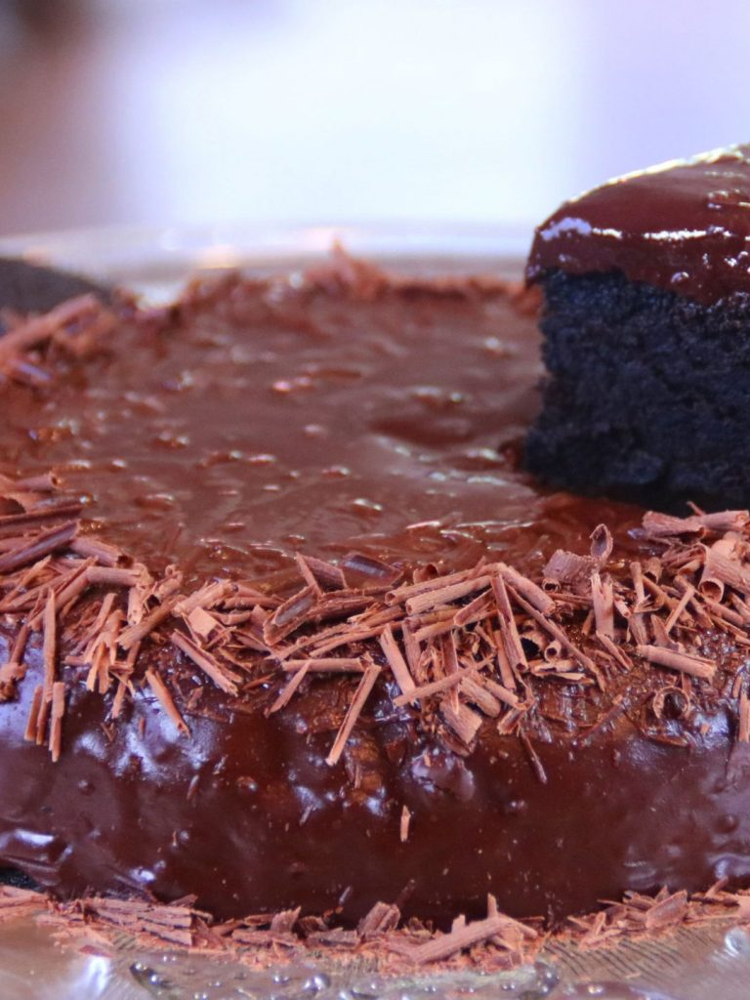

4 Ingredient Oreo Cake – The Easiest Cake in the World
Oreo cakes are easy and delicious. This cake only uses 4 ingredients and no oven. The longest process is the cooking time on the stove. Other than that, the cake is so easy to make. Give it a try!
Ingredients
- 28 Oreo cream cookies (original)
- 1 tablespoon Baking powder
- 1 cup Milk
- 1 cup Copped chocolate
- 6 tablespoons Unsalted butter
Recipe
Making the Cake
- Separate the Oreo tops from the bottoms. Place the tops and bottoms in one bowl and scrape off the filling a put it in another bowl.
- Put the cookie tops and bottoms into a food processor and pulse until a fine crumbly mixture forms. You can put them in a plastic bag and pound them too.
- Add in the baking powder, milk, and Oreo filling. Mix or pulse until and a smooth, silky mixture forms.
- Spray a saucepan with baking spray and line the bottom with parchment paper. Pour the mixture in and place a lid on.
- Place a larger frying pan on the stove over low heat. Put the saucepan inside the larger pan and cook for 50 minutes or until a toothpick comes out clean.
- Place a wire rack over the saucepan and flip it over so the cake comes out. Remove the parchment paper and let it cool.
Making the Chocolate Glaze and finishing the Cake
- Put the chocolate into a bowl and place it in the microwave. Melt it over high, removing and stirring until completely melted.
- Add the butter in slowly and stir with a spatula until a silky glaze forms.
- Once the cake has cooled, pour the glaze evenly over it.
- Sprinkle some grated chocolate around the edges.
- Slice, serve, and enjoy your 4 ingredient Oreo cake.
